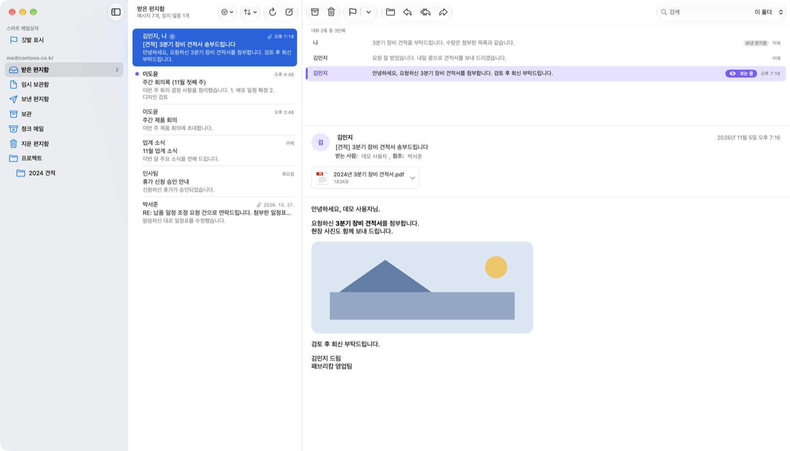
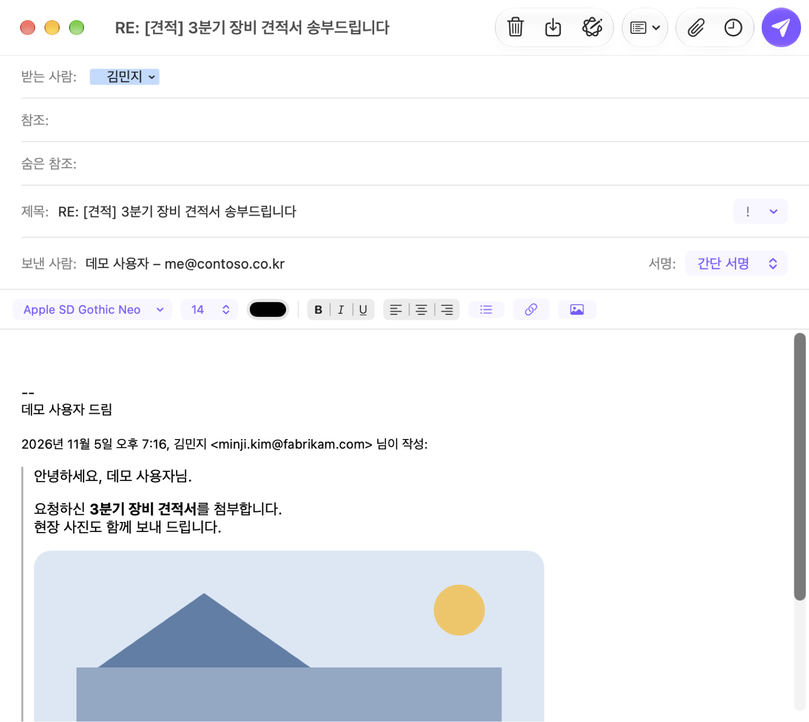
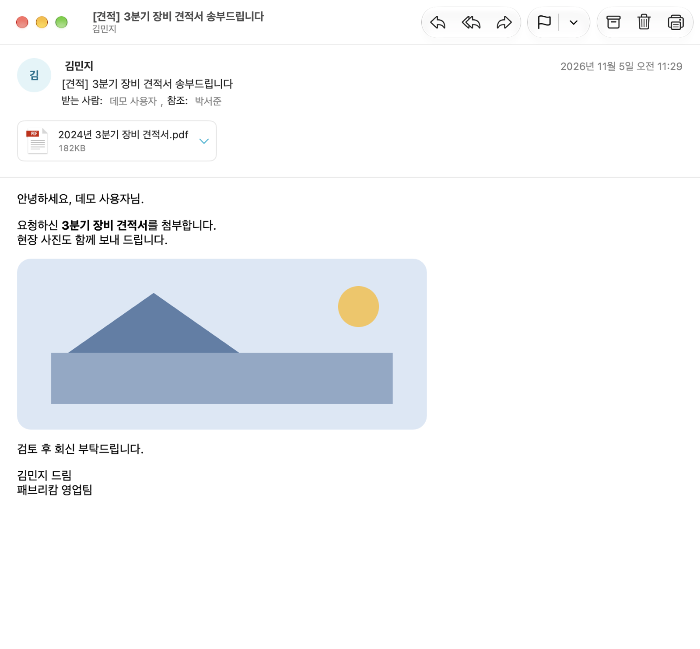
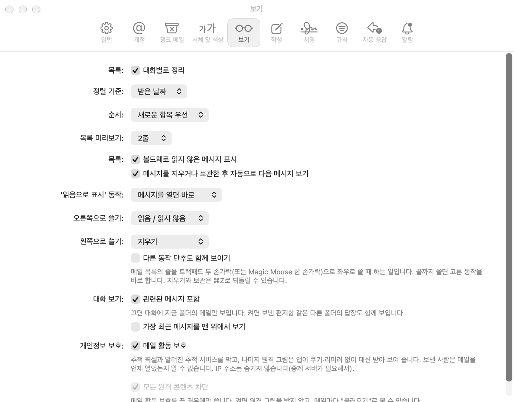

FAKUKU Mail
회사 메일을, 맥답게.
Microsoft 365(Exchange Online) 메일을 맥 Mail처럼 빠르고 편하게. 한글 첨부, 대화 보기, 개별 발송, Siri까지.
macOS 26 이상 · Microsoft 365 회사 계정

메일에 필요한 것, 모두
Exchange Online을 쓰는 회사 사람에게 맞춘 기능들입니다.
Exchange Online에 바로
회사 이메일만 넣고 로그인합니다. 메일은 Microsoft 서버에 그대로 있고, 앱은 Microsoft Graph로 직접 다룹니다.
한글 첨부 이름이 깨지지 않게
받는 쪽이 Outlook이든 옛 국내 시스템이든 한글 파일 이름이 그대로 보이도록 첨부를 고쳐 보냅니다.
대화로 묶어 보기
다른 폴더의 답장까지 한 대화로 보고, 지금 읽는 메일이 대화의 어디인지 바로 보입니다.
메일 활동 보호
추적 픽셀을 막고 원격 그림은 앱이 쿠키 없이 대신 받습니다. 보낸 사람은 언제 열었는지 알 수 없습니다.
개별 발송
HTML 템플릿과 받는 사람 그룹으로, 사람마다 이름을 넣어 한 통씩 보냅니다. 스팸으로 보이지 않게 간격을 둡니다.
나의 Mac에 보관
메일상자를 .mbox로 내보내고, 옛 메일 파일을 가져와 맥에 보관합니다. 오프라인에서도 찾아 읽습니다.
Siri와 단축어
“파쿠쿠 메일 읽지 않은 메일 읽어 줘”, “이 메일에 깃발 달아 줘”. 말로 메일을 다룹니다.
회의와 캘린더
회의 초대를 메일에서 바로 수락하고, 수락한 회의를 맥 캘린더에도 넣습니다.
빠르고 매끄럽게
다음 메일을 미리 받아 두고, 연 메일은 기억합니다. 스크롤과 창 크기 조절이 끊기지 않습니다.
맥답게
메뉴 막대와 단축키, 트랙패드로 쓸기, 강조 색과 다크 모드. 맥이 한국어면 한국어, 영어면 영어로.
한눈에 보기
맥의 밝은 모드와 어두운 모드를 그대로 따릅니다.



메일은 당신의 것
FAKUKU Mail은 메일을 제작자의 서버로 보내지 않습니다.
자주 묻는 질문
어떤 계정으로 쓸 수 있나요?
Microsoft 365의 회사·학교 계정(Exchange Online)입니다. Gmail, 네이버 메일 같은 다른 메일은 지원하지 않습니다.
“관리자 승인 필요”가 나와요.
회사에 따라 처음 쓰는 앱은 IT 관리자의 승인이 한 번 필요합니다. 로그인 화면의 “관리자 승인 링크 복사”로 링크를 관리자에게 보내 주세요. 한 번 승인되면 회사 직원 모두 바로 쓸 수 있습니다.
메일이 맥에 저장되나요?
메일은 서버에 있습니다. 오프라인에서도 보이도록 최근 메일의 사본만 맥에 두고, 로그아웃하면 지웁니다. 직접 가져온 메일상자는 “나의 Mac에”에 보관됩니다.
맥 Mail이나 Outlook과 같이 써도 되나요?
네. 모두 같은 Exchange 사서함을 보므로 읽음, 깃발, 폴더가 어디서든 같게 보입니다.
지금 시작하세요
회사 이메일만 있으면 됩니다.
macOS 26 이상 · Microsoft 365 회사 계정